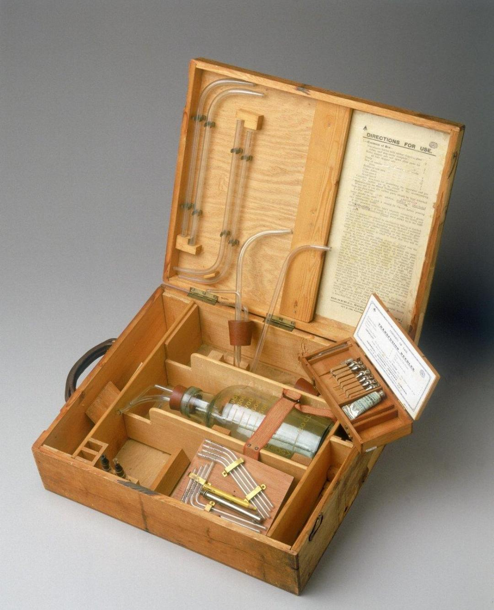
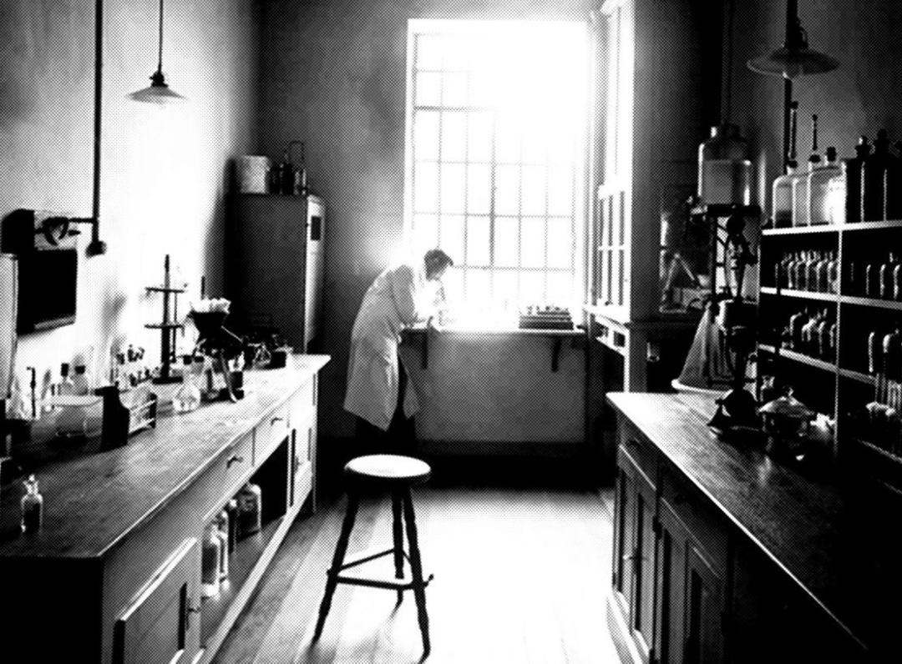

In 1930, a Russian doctor named Sergei Yudin was working in a small hospital. A woman died during childbirth from severe bleeding, even though she only needed a small amount of blood. No donor was available in time. So, he decided to take blood from the body of a man who had died from a heart attack just 6 hours earlier. He tested it on another dead body, then on animals. When it worked, he tested it on a living person. The world called him crazy, but he saved many lives. He kept developing the idea until he created the world's first real blood bank. Because of him, we now have blood bags stored safely in fridges.
Before 1901, if you donated blood to a friend, you might kill them. No one knew why. An Austrian doctor named Karl Landsteiner noticed that when he mixed blood from two different people, sometimes it would clump up and dissolve, and sometimes it wouldn't. He experimented with his own blood and his colleagues' blood. Finally, he discovered that human blood is divided into 3 types: A, B, and O (the 4th type AB was found later). The reason is that there are "antibodies" that attack any foreign type. Imagine: Only 100 years ago, everyone thought their blood was fine for anyone. Landsteiner spent his life explaining this idea and prevented thousands of deaths. He won a Nobel Prize, and the world thanked him for making blood transfusion safe, not a gamble.
World War II was a disaster, but it also caused blood transfusion to develop rapidly. The American army had a problem: How do you get liquid blood to the battlefield without it spoiling or clotting? They found the solution in "dried blood." They would take plasma (the liquid part of blood), dry it into a yellow powder, and put it in a small box with a tube and sterile salt. On the battlefield, a bleeding soldier would have the powder mixed with water, shake it, and within minutes it became liquid blood ready for transfusion. This method saved thousands of soldiers. They called it "war magic." It was the first time a part of blood was separated and used alone.

Before the 1970s, one blood bag went to a single patient. They would take the whole bag and give it to someone bleeding heavily. But others in the hospital needed different things: one needed red blood cells for anemia, another needed platelets because they were bleeding during surgery, and a child needed plasma for burns. A smart American doctor thought, "Why not divide the bag into 3 parts before using it?" Using a machine called a centrifuge (a spinning device), he was able to separate each part into its own small bag. Suddenly, one bag saved 3 lives. This idea reduced the need for more donors and made sure each part of blood went to the most suitable patient. Now, this is the system used everywhere.
In Australia in 1936, a baby named James Harrison was born. At age 14, he had major chest surgery and needed blood from 13 donors to survive. After the surgery, he told himself, "When I grow up, I have to return the favor." So, he started donating at age 18. When they tested his blood, they discovered something incredibly rare: In his blood was a special antibody called Anti-D, which could protect unborn babies from a deadly disease called "Rhesus disease." No one else in the world had this high concentration. He donated every two weeks for 60 years. This saved over 2.4 million children. They called him "The Man with the Golden Arm." He donated over 1,000 times. He stopped when he reached the legal age limit of 81. He's still alive, and no one he saved will ever forget his name.
In some old villages, people believed there was "strong blood" (blood from big strong men and farmers) and "weak blood" (blood from women and younger people). When someone got sick, they would bring the strongest man in the village, take his blood, and transfer it into the patient. The idea was that "strengthening" the patient's blood would cure them, and they thought the whole "blood types" thing was nonsense. The result was that patients died faster from clotting or bad reactions. It wasn't until scientists proved that blood types were real — not a myth — that this stopped.

In the late 19th century (around 1880), at Kasr Al Ainy Hospital, the first recorded blood transfusion in Egypt took place. It was extremely primitive: a thin rubber tube, a fragile glass needle that broke easily, and a donor who had to be a family member (often the mother, father, or brother). There was no such thing as "antibody testing," and the whole process was a race against time. If the tube got blocked by clotted blood, it was over. In 1960, the first government blood bank was officially built, offering safe, type-divided blood. Today, Egypt has over 300 blood transfusion centers, and its people fill them with the blood that saves lives.